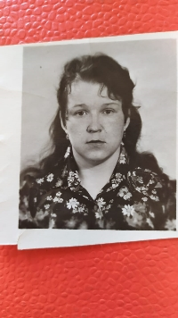

Родилась: 29.05.1959, Старый Оскол
Умерла: 02.04.2019 (от рассеянного склероза)
Продолжительность жизни: 59
Место жительства: Старый Оскол
Основное занятие: Медсестра
Окончила медучилище, после чего получила звание - сержант.
В возрасте 36 лет диагностировали заболевание "Рассеянный склероз", из-за которой у неё были параллизованы ноги и не только.
Отец: Беликов Павел Ильич
Мать: Беликова Нина Фёдоровна
Сестра: Рыбкина (Беликова) Валентина Павловна
Сестра: Болотских (Беликова) Надежда Павловна
Брат: Беликов Леонид Павлович
Сестра: Данилова (Беликова) Алла Павловна
Отец детей: Агарков Виктор Николаевич
Сын: Агарков Алексей Викторович
Дочь: Белова (Агаркова) Людмила Викторовна
. |